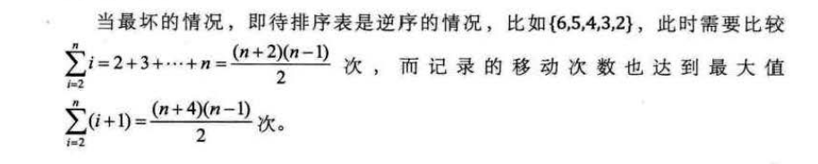

接下来我来讲述一下插入排序法。
首先来解释一下插入排序法的原理，它的原理是每插入一个数都要将它和之前的已经完成排序的序列进行重新排序，也就是要找到新插入的数对应原序列中的位置。那么也就是说，每次插入一个数都要对原来排序好的那部分序列进行重新的排序，时间复杂度同样为O（n²）。 这种算法是稳定的排序方法。
根据代码我们来解释一下直接插入排序的核心
例如，我们要对5,3,4,6,2这几个数进行排序
| a[] | 0 | 1 | 2 | 3 | 4 |
|---|---|---|---|---|---|
| 值 | 5 | 3 | 4 | 6 | 2 |
当这个数组进入函数后，下标首先定义到i = 1，即排序前，首先定义为a[0] = 5即是有序的。
进入循环内，比较a[1] 是否小于 a[0] 发现是小于的，这个时候按理说是要把a[0]这个元素右移动1位。然后将a[1]这个元素插在a[0]的位置上
但是考虑到这样子将覆盖原来的a[1]的值，所以先将a[1]的值拷贝一份给temp，然后将a[0]右移一位，再将temp的值传给a[0] .即
| a[] | 0 | 1 | 2 | 3 | 4 |
|---|---|---|---|---|---|
| 值 | 3 | 5 | 4 | 6 | 2 |
这时i =2了。此时a[0],a[1]属于有序的序列了，我们此时再次比较a[2]是否小于a[1]（前一位），4<5，满足if条件
temp = a[2] 先拷贝一份，再将a[1] 右移一位，再次比较a[0]是否大于temp ,发现3并没有大于4，由此可见只要i前面有序数存在大于a[i]的值，有序序列就要向后移动，
然后再把a[i] 插在正确的位置。
| a[] | 0 | 1 | 2 | 3 | 4 |
|---|---|---|---|---|---|
| 值 | 3 | 4 | 5 | 6 | 2 |
当i = 3时，这个时候6比5大，不满足if条件，也可以发现，前面已经都是有序序列{3,4,5,6}.
最后当i = 4时，发现2 < a[3] 这个时候同理前面操作，先将a[4]拷贝一份给temp ,a[4] = a[3],右移一位
再次比较 ,发现temp < a[2] , a[3] =a[2] ,右移一位
再次比较 ,发现temp < a[1] , a[2] =a[1] ,右移一位
再次比较 ,发现temp < a[0] , a[1] =a[0] ,右移一位
此时就可以把temp 赋值给了a[0] ，这个时候就已经排序完成了。
| a[] | 0 | 1 | 2 | 3 | 4 |
|---|---|---|---|---|---|
| 值 | 2 | 3 | 4 | 5 | 6 |
从空间上看，它只需要一个辅助空间temp ，因此我们关键看它的时间复杂度。
当最好的情况下，也就是序列本身就是有序的 ，这个时候我们只有进行每次的if判断(第20行)，比较的次数n-1,移动的次数0，这个时候时间复杂度O(n)

如果排序记录是随机的话，那么根据概率相同的情况原则，平均比较和移动的次数约为(n^2)/4 次，因此我们可以得出直接插入排序法的书剑复杂度为O(n^2) 从这里也可以看出
直接插入排序比冒泡排序和简单选择排序性能要好一点，是一个稳定的排序算法。